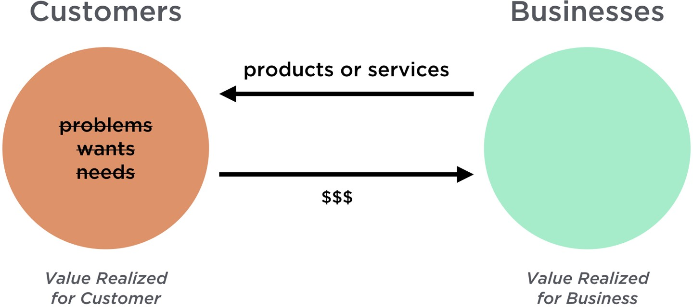

Small Business Solution
As a small business, you know that success is not always easy to come by. Between competing with big businesses and maintaining a tight budget, there are plenty of obstacles in your way. But with the right tips and advice, you can set your business up for success.
New business owners face quite bleak statistics. According to the U.S. Bureau of Labor Statistics, 18.4% of businesses in the U.S. fail within the first year, while 49.7% close after five years. But that doesn’t mean you should give up on your dreams of owning a successful small business.
Solutions
Provide Exceptional Value
It is impossible for small businesses to survive without a customer base; therefore, you must provide exceptional service to keep your customers coming back. It’s estimated that acquiring a new customer costs 5 times as much as it does to keep the same customer coming back. Hence, small businesses must provide value if they want to succeed.
Why is it essential?
- Helps you stand out from the competition: It is impossible for small businesses to survive without a customer base; therefore, you must provide exceptional service to keep your customers coming back. It’s estimated that acquiring a new customer costs 5 times as much as it does to keep the same customer coming back. Hence, small businesses must provide value if they want to succeed.
- Builds customer loyalty: If you provide your customers with a great experience, they are likely to come back for more.
- Increases word-of-mouth marketing: Happy customers are often willing to tell others about their positive experiences, which will increase your organic sales.

Invest in the Right Business Tools
Investing in the right business tools will help you simplify daunting tasks, like deal management, sales processes, and team collaboration. When you have the right tools, you can increase efficiency while focusing on revenue-generating activities. As a small business owner, your budget is often tight. Instead of saving money by skimping on business tools, invest in a tool that handles all the necessary aspects of your business, which will end up saving you money.
Why is it essential?
- Saves time and money: Investing in the right tools allows you to automate tasks that would otherwise take up valuable time.
- Helps to be more productive: Using the right tools allows you to be more productive, and spend your time on the things that grow your business.
- Improves your business decisions: Right tools help you access data you can use to make better business decisions.

Have a Strong Online Presence
In today’s digital age, it’s more important than ever for small business owners to have a strong online presence. A recent study found that nearly 28% of small businesses don’t have a website, and of those that do, many are outdated or poorly designed. This can significantly impact their ability to reach new customers and grow their business.
Why is it essential?
- Increases visibility: With so much competition out there, it can be difficult for small businesses to get noticed. Having a strong online presence helps to increase your visibility and get your name out there.
- Gives greater reach: A website or social media account allows you to reach a much wider audience than you would be able to through traditional marketing methods.
- Enhances customer engagement: An online presence gives you more opportunities to interact with your customers and build relationships with them. You can also use your online platform to collect feedback and help improve your products and services.

Set Goals and Have a Plan for Success
Setting goals and having a plan for business success is essential for any small business owner who wants to be successful. Without a clear destination, it is all too easy to get lost along the way or to make decisions that take the business in the wrong direction.
Why is it essential?
- Helps you reach business goals:Having a solid business plan helps clarify the goals of a small business. What does the business want to achieve? What are the key milestones that need to be reached? Without a clear plan, it can be difficult to set and achieve meaningful goals.
- Provides a roadmap for success: A plan provides a roadmap for success. It can be difficult to know what steps need to be taken to reach objectives. A plan can help to map out the steps that need to be taken, as well as provide guidance on how to deal with obstacles along the way.
- Tracks progress: Goals help track progress and identify areas of improvement. Without goals in place, it can be difficult to tell if a small business is making progress.